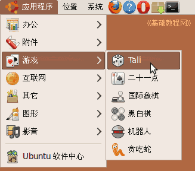
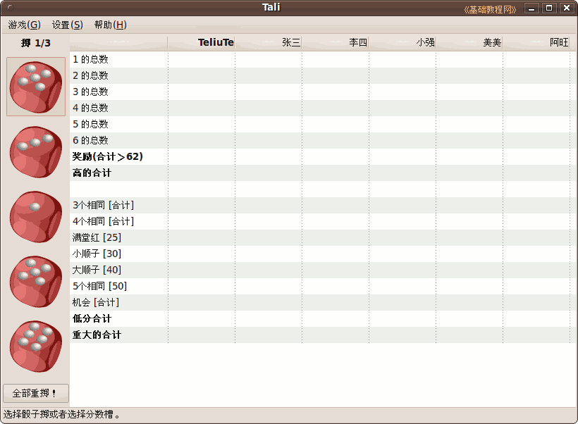
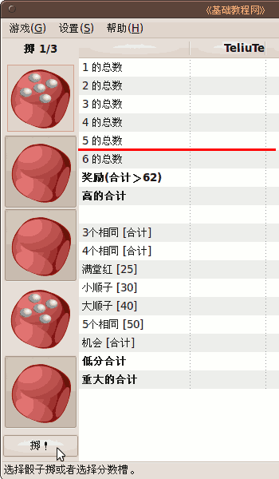
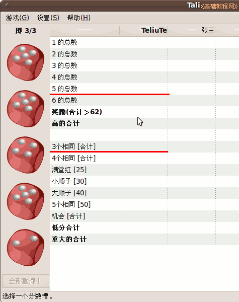
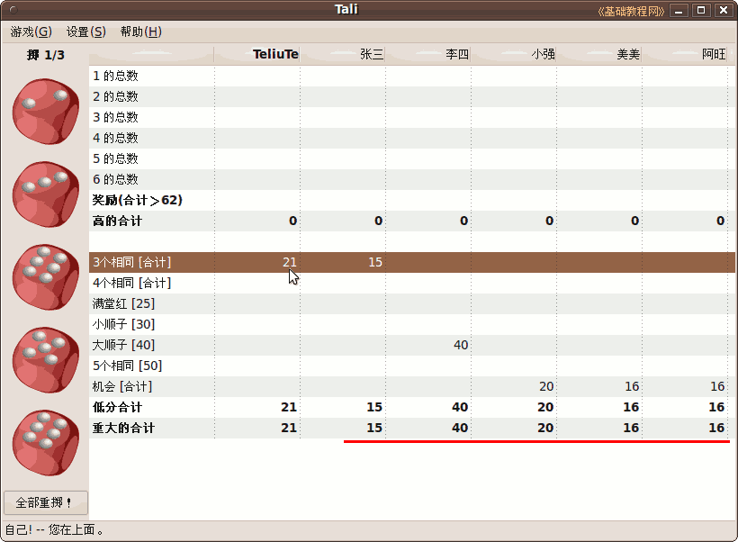
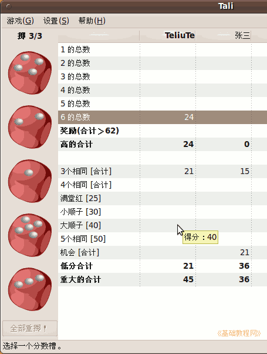
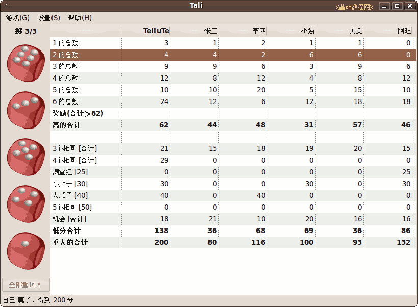
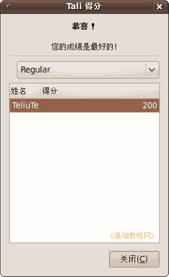

Ubuntu/GNOME 桌面程序指南
作者：TeliuTe 来源：基础教程网
九十五、Tali 骰子游戏 返回目录 下一课在这里，您可以休闲娱乐，锻炼逻辑思维能力；
1、Tali 骰子游戏
1）点菜单“应用程序 - 游戏 - Tali 骰子游戏”，打开窗口；

2）左边是五个骰子，显示了五个点数，右边是积分表，骰子对应上哪一项就得相应的分；

3）如果想多掷几个五点，点击不是五的骰子扣下，再点下边的“掷”按钮，有两次机会；

4）掷完就找右边积分表中能得最多分的项，可以是上面“5的总数”，也可以是下面“3个相同”；

5）点“3个相同”，这一项得分是骰子的总数21分，然后轮到其他几个玩家也有得分；

6）如果掷出的点数依次增大，就是“大顺子”得分是40分；

7）积分表中所有项都填完以后，下面的统计分数中最多的羸；

8）出来一个排行榜，显示成绩排行；

本节学习了Tali 骰子游戏的基础知识，如果你成功地完成了练习，请继续学习下一课内容；
本教程由86团学校TeliuTe制作|著作权所有
基础教程网：http://teliute.org/
美丽的校园……
转载和引用本站内容，请保留版权信息和本站链接。